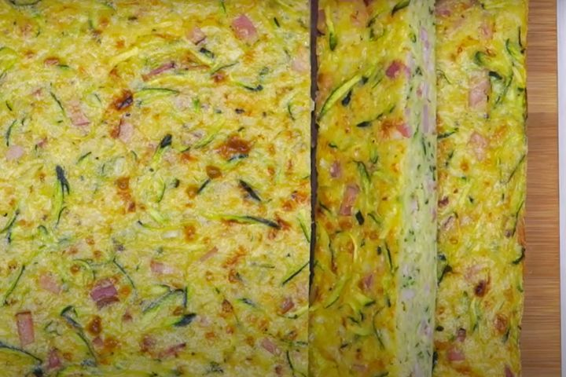

Zucchini slice

One day, not having any gluten-free pasta on hand but lots of zucchini, I decided to use 'zoodles' instead of noodles. The whole family enjoyed it! I don't use any salt in the recipe because the cheeses already contain it. This dish is even better the next day and freezes well too.
Ingredients
- 5 Coles Australian Free Range Eggs
- 150g (1 cup) Coles White Self Raising Flour, sifted
- 375g zucchini, grated
- 1 large onion, finely chopped
- 200g rindless bacon, chopped
- 1 cup grated cheddar cheese
- 60ml (1/4 cup) vegetable oil
Steps
-
Preheat oven to 170C.
- Beat the eggs in a large bowl until combined. Add the flour and beat until smooth, then add zucchini, onion, bacon, cheese and oil and stir to combine.
zucchini slice raw
-
Grease and line a 30 x 20cm lamington pan. Pour into the prepared pan and bake in oven for 30 minutes or until cooked through.
.